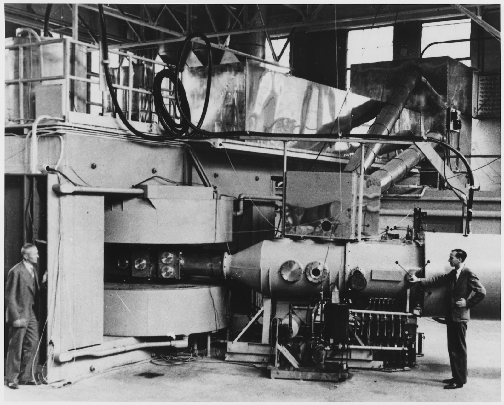

Charged particle in electric and magnetic fields
Why can a laboratory tell the carbon-14 atoms of an ancient piece of wood from ordinary carbon atoms, although they behave the same chemically and there is only about one in a trillion of them?
Prior knowledge
- A charged particle in an electric field is acted on by a force of magnitude $F = |q|E$chapter Uniform electric field), and on travelling across an accelerating voltage $U$ it gains energy $W = |q|U$ (chapter Potential energy and potential in an electric field
- The strength of a magnetic field is the magnetic flux density $B$, whose unit is the teslachapter Magnets, the magnetic dipole and the magnetic field
- In uniform circular motion the net force points towards the centre of the path and has magnitude $\tfrac{mv^2}{r}$chapter Centripetal acceleration and the equation of motion in a circle
Think about it
In radiocarbon dating the age of an ancient piece of wood is found from how much radioactive carbon-14 is still left in it. Carbon-14 atoms make up only about one in a trillion of the carbon atoms of the sample, and chemically they behave like ordinary carbon-12. In the laboratory the carbon atoms of the sample are turned into ions, which are accelerated to a high speed and directed into a magnetic field. At the detector the carbon-12 and carbon-14 ions strike different places, so they can be counted separately.
How can a magnetic field sort particles that differ from each other only in mass?
Optional Revise: an electric field accelerates
Predict
Prediction 1: speed in a magnetic field
More predictions 2 questions
Prediction 2: double the speed
Prediction 3: velocity selector
Investigate
Simulation
How to use
The particle enters the chamber through a slit in the left wall and at first moves to the right. Choose the particle, its speed $v$, the magnitude and direction of the magnetic field $B$ and the strength of the electric field $E$ between the plates, and press Launch. The blue arrow is the velocity, the red arrows are the magnetic force $\overline{F}_\text{m}$ and the electric force $\overline{F}_\text{s}$; the longer of the force arrows is always the same length, and the shorter is drawn in the same proportion. The left wall is the detector: the reading $d$ is the distance of the point of impact from the slit. If the particle leaves through the right edge, the readings show its deflection $y$ from the height of the slit. The side of a square of the grid is $5\,\text{cm}$. When you change any value, the particle returns to the slit. Speed changes only the pace of the animation.
Assumptions of the model
The chamber is a vacuum, and the fields are uniform throughout the chamber. The magnetic field is perpendicular to the paper, and the electric field points from the lower plate ($+$) to the upper plate ($-$). The masses and charges of the particles are real: proton $1.673 \cdot 10^{-27}\,\text{kg}$ and $+e$, deuteron $3.344 \cdot 10^{-27}\,\text{kg}$ and $+e$, alpha particle $6.645 \cdot 10^{-27}\,\text{kg}$ and $+2e$, and negative hydrogen ion $1.674 \cdot 10^{-27}\,\text{kg}$ and $-e$. Gravity is left out, because it is about $10^{12}$ times smaller than the magnetic force. The speeds are under $1\,\%$ of the speed of light, so classical mechanics is enough. The motion is shown in slow motion: at normal speed one second of animation corresponds to $1.0 \cdot 10^{-7}\,\text{s}$. The readings are values of the model, not measurements.
How the calculation works
The simulation calculates the path in small time steps from Newton's second law. The particle is acted on by the electric force $q\overline{E}$ and the magnetic force, whose magnitude is $|q|vB$ and whose direction is perpendicular to both the velocity and the field; the direction of the force on a positive charge is given by the right-hand rule. The point of impact $d$, the deflection $y$ and the speed are obtained from the calculated path, and the formula for the radius is not used for them. The forces $F_\text{m} = |q|vB$ and $F_\text{s} = |q|E$ in the readings are calculated at the initial speed.
Choose a particle and the fields and press Launch. Watch how the path curves, where the particle lands and what happens to its speed.
Experiment 1: only the direction changes
Test predictions 1 and 2. The particle is a proton, the magnetic field $0.20\,\text{T}$ points out of the page, and there is no electric field. Change only the speed. Press Launch, watch the path and record the point of impact $d$ and the speed at the end at least for speeds of $1.0 \cdot 10^{6}\,\text{m/s}$ and $2.0 \cdot 10^{6}\,\text{m/s}$, and for others too if you like. In the table the speed is in the unit $\text{Mm/s}$, $1\,\text{Mm/s} = 10^{6}\,\text{m/s}$. The radius of the path is half the distance of the point of impact.
- Initial state
- particle: proton, speed $v$ = $1\,\text{Mm/s}$, magnetic field $B$: $0.20\,\text{T}$, direction of the field: out of the page, electric field $E$ = $0\,\text{kV/m}$
- Kept constant
- particle, magnetic field $B$, direction of the field, electric field $E$
- Varied
- speed $v$
| speed $v$ | $d$ $(\text{cm})$ | $v$ at the end $(\text{Mm/s})$ |
|---|
More to investigate 2 tasks
Experiment 2: velocity selector
Test prediction 3. The chamber now has an electric field of $150\,\text{kV/m}$ and a magnetic field of $0.15\,\text{T}$ out of the page, and the speed is $1.0 \cdot 10^{6}\,\text{m/s}$. Change only the particle. Press Launch and record the deflection and the forces at least for the proton and the alpha particle. The forces are in femtonewtons, $1\,\text{fN} = 10^{-15}\,\text{N}$.
- Initial state
- particle: proton, speed $v$ = $1\,\text{Mm/s}$, magnetic field $B$ = $0{.}15\,\text{T}$, direction of the field: out of the page, electric field $E$ = $150\,\text{kV/m}$
- Kept constant
- speed $v$, magnetic field $B$, direction of the field, electric field $E$
- Varied
- particle
| particle | $y$ $(\text{cm})$ | $F_m$ $(\text{fN})$ | $F_s$ $(\text{fN})$ |
|---|
Conclusion: what does a magnetic field do?
On the basis of your tables, write: did the magnetic field change the speed of the proton? How did the point of impact and the radius of the path depend on the speed? Why did all the particles pass straight through the velocity selector, although their masses and charges were different?
Model answer
At the end the speed was the same as at the start, for example $1.00 \cdot 10^{6}\,\text{m/s}$, although the motion of the proton turned to the opposite direction: the magnetic force is perpendicular to the velocity and does no work. When the speed doubled from $1.0 \cdot 10^{6}\,\text{m/s}$ to $2.0 \cdot 10^{6}\,\text{m/s}$, the point of impact moved from $10.4\,\text{cm}$ to $20.9\,\text{cm}$, so the radius $r = d : 2$ also doubled: the radius is directly proportional to the speed. In the velocity selector the deflection was $0\,\text{cm}$ for all the particles. The alpha particle was acted on by an electric force and a magnetic force of $48\,\text{fN}$ each, twice the $24\,\text{fN}$ of the proton, but the forces were still equal and opposite, so the net force was zero. From the condition $qE = qvB$ the charge cancels, and the speed that passes straight through is $v = E : B = 1.0 \cdot 10^{6}\,\text{m/s}$. The numbers are values of the model.
Assess your own answer
Tick the points your own answer already contains.
Theory
Key idea
An electric field accelerates
In the chapter Uniform electric field we saw that a charged particle in an electric field is acted on by an electric force $\overline{F}_\text{s} = q\overline{E}$, where $q$ is the charge of the particle with its sign. On a positive particle the force points in the direction of the field $\overline{E}$, on a negative particle in the opposite direction. The magnitude of the force depends only on the magnitude of the charge $|q|$, not on its sign. When the particle travels across an accelerating voltage $U$, the field does work $W = |q|U$ on it (chapter Potential energy and potential in an electric field), and the work increases the kinetic energy of the particle. For a particle starting from rest we therefore have
$$\begin{aligned} F_\text{s} &= |q|E \\ |q|U &= \tfrac{1}{2} m v^2 \end{aligned}$$
where $|q|$ is the magnitude of the charge of the particle (C), $E$ the electric field strength (V/m), $U$ the magnitude of the accelerating voltage (V), $m$ the mass (kg) and $v$ the speed (m/s). For a positive particle, such as a proton, $|q| = q$. An electric field can set a charged particle in motion and increase its speed.
A magnetic field turns a moving charge
A magnetic field $\overline{B}$ (chapter Magnets, the magnetic dipole and the magnetic field) has no effect on a charge at rest. A moving charged particle is acted on by a magnetic force, which is perpendicular to both the velocity $\overline{v}$ of the particle and the field $\overline{B}$. The direction of the force on a positive charge is given by the right-hand rule: hold out your right hand so that the thumb points in the direction of the velocity and the other fingers in the direction of the field; the palm then pushes in the direction of the force. On a negative charge the force acts in the opposite direction. When the particle moves along the field, the force is zero.

The force does not change the speed: the path is a circle
Because the magnetic force is perpendicular to the velocity at every moment, it does no work. The kinetic energy and the speed of the particle stay the same; only the direction of the motion changes. When the particle moves perpendicular to a uniform field, the force is of constant magnitude and always points towards the same point. The particle is then in uniform circular motion, and the magnetic force acts as its centripetal force (chapter Centripetal acceleration and the equation of motion in a circle).
For example, a proton flying at a speed of $1.0 \cdot 10^{6}\,\text{m/s}$ perpendicular to a field of $0.20\,\text{T}$ is acted on by a force of $3.2 \cdot 10^{-14}\,\text{N}$, and it goes round a circle of radius about $5.2\,\text{cm}$. The weight of the proton, $1.6 \cdot 10^{-26}\,\text{N}$, is about $10^{12}$ times smaller, so gravity is neglected in the motion of particles.
Magnetic force and circular path
The magnitude of the magnetic force on a charged particle moving in a magnetic field is
- magnetic force on a charged particle
- $$F_\text{m} = |q| v B \sin\alpha$$
where $|q|$ is the magnitude of the charge of the particle (C), $v$ the speed of the particle (m/s), $B$ the magnetic flux density (T) and $\alpha$ the angle between the velocity and the field. When the velocity is perpendicular to the field, $\sin 90^\circ = 1$ and the force is greatest, $F_\text{m} = |q|vB$. A particle moving along the field is not acted on by any force, because $\sin 0^\circ = 0$. From the definition of the tesla it follows that $1\,\text{C} \cdot 1\,\tfrac{\text{m}}{\text{s}} \cdot 1\,\text{T} = 1\,\text{N}$.
When the particle moves perpendicular to a uniform magnetic field, the magnetic force is the centripetal force of the circular motion. By Newton's second law $|q|vB = \tfrac{mv^2}{r}$, and solving gives the radius of the path:
$$\begin{aligned} |q| v B &= \frac{m v^2}{r} \\ r &= \frac{m v}{|q| B} \end{aligned}$$
where $r$ is the radius of the circular path (m) and $m$ the mass of the particle (kg). The radius is directly proportional to the mass and the speed of the particle and inversely proportional to the charge and the field. A heavy or fast particle curves gently, and a strong field bends the path tightly. The formula holds when the speed is small compared with the speed of light. The graph below shows the radius $r$; at the detector of the simulation the distance of the point of impact from the slit is the diameter $d = 2r$.
Velocity selector and mass spectrometer
Velocity selector
In a velocity selector the particles pass between two plates, where there is both an electric field and a magnetic field perpendicular to it. The fields are directed so that the electric force $|q|E$ and the magnetic force $|q|vB$ point in opposite directions. Only a particle on which the forces are equal passes straight through the selector:
$$\begin{aligned} |q|E &= |q|vB \\ v &= \frac{E}{B} \end{aligned}$$
where $E$ is the strength of the electric field between the plates (V/m) and $B$ the magnetic flux density (T). The charge cancels from the equation, so the selector lets straight through all particles whose speed is $E : B$, whatever their mass, charge or sign of charge. The magnetic force is greater on faster particles, and they curve in its direction; slower ones curve in the direction of the electric force.
Mass spectrometer
In a mass spectrometer the ions coming from the velocity selector, whose speed is therefore known, are directed through a slit into a second magnetic field $B_2$. There they travel along a semicircle and strike the detector, which is next to the slit. The distance of the point of impact from the slit is the diameter $2r$ of the path. The mass of the ion is solved from the formula for the radius:
$$m = \frac{|q| B_2 r}{v}$$
At the same speed and charge the radius of the path is directly proportional to the mass, so heavier ions land farther away. This separates the isotopes of an element, which differ only in mass: in radiocarbon dating carbon-14 ions are separated from carbon-12 ions and counted separately. A mass spectrometer is also used to identify, for example, doping substances and environmental toxins.
Particle accelerator
A particle accelerator needs both fields. Because the magnetic force does no work, only an electric field can increase the energy of a particle: each time the particle travels across the voltage $U$ of an accelerating gap, its kinetic energy increases by $|q|U$. The magnets, in turn, bend and focus the particle beam. In a ring accelerator the same particle passes through the same accelerating gap again and again. As the speed increases, the magnetic field is strengthened so that the radius of the path, $r = mv : (|q|B)$, stays the same and the particles stay in the ring.

The ring of the LHC accelerator at CERN, the European Organization for Nuclear Research, is $26.7\,\text{km}$ long. Its $1232$ superconducting bending magnets produce a field of up to about $8.3\,\text{T}$, and since 2022 the energy of the protons has been $6.8\,\text{TeV}$, or about $1.1 \cdot 10^{-6}\,\text{J}$ per proton (CERN 2017, LHC the guide; CERN 2022). The protons travel at almost the speed of light, so the formula $r = mv : (|q|B)$ no longer holds for them as it stands, but the principle is the same: the greater the energy, the stronger the field or the larger the ring that is needed.
Common misconception
Many people think that a magnetic field pulls a charged particle in the direction of the field or towards a pole, as a magnet pulls an iron nail, and that the field accelerates the particle. The magnetic force, however, is always perpendicular to both the velocity and the field. That is why it does no work and does not change the speed of the particle: it only turns the direction of the motion. The speed of a particle can be increased only by an electric field, and that is why accelerators contain both electric fields and magnets.
Another mistake is to forget the sign of the charge. The right-hand rule gives the direction of the force on a positive charge, and on a negative charge the force acts in the opposite direction. An electron that flies at the same speed into the same field as a proton therefore curves in the opposite direction, and its path is about $1840$ times smaller, because its mass is so much smaller.
Summary
- An electric field accelerates a charged particle: the force is $\overline{F}_\text{s} = q\overline{E}$ and its magnitude $F_\text{s} = |q|E$, where $q$ is the charge with its sign. A particle starting from rest gains kinetic energy $E_\text{k} = |q|U$ on travelling across an accelerating voltage $U$.
- The magnetic force $F_\text{m} = |q|vB \sin\alpha$ acts only on a moving charge. It is perpendicular to both the velocity and the field; its direction on a positive charge is given by the right-hand rule, and on a negative charge it is the opposite.
- The magnetic force does not change the speed. A particle moving perpendicular to a uniform field goes round a circle of radius $r = mv : (|q|B)$.
- Only the speed $v = E : B$ passes straight through a velocity selector. A mass spectrometer separates ions moving at the same speed by their mass, because the radius is proportional to the mass.
- In a particle accelerator electric fields increase the energy of the particles and magnets steer their path.
Optional Return to your predictions
Compare your predictions with the values of the model in the experiments and with the equation $r = mv : (qB)$. Then return to the opening question: why do carbon-14 ions strike the detector in a different place from carbon-12 ions, when they have the same charge and enter the magnetic field at the same speed (after the velocity selector)?
Would you change your prediction?
Examples
Example 1: A velocity selector
In the velocity selector of a mass spectrometer the electric field strength is $6.00 \cdot 10^{4}\,\text{V/m}$ and the magnetic flux density $0.200\,\text{T}$. Neon ions of charge $q = e = 1.602 \cdot 10^{-19}\,\text{C}$ that have passed straight through the selector enter, through a slit, a magnetic field whose magnetic flux density is $0.500\,\text{T}$. The ions curve through a semicircle and strike the detector $24.9\,\text{cm}$ from the slit. What is the mass of an ion in kilograms and in atomic mass units ($1\,\text{u} = 1.661 \cdot 10^{-27}\,\text{kg}$)?
Step 1/7
Given and find. In the selector $E = 6.00 \cdot 10^{4}\,\text{V/m}$ and $B_1 = 0.200\,\text{T}$, in the bending field $B_2 = 0.500\,\text{T}$, the distance of the point of impact from the slit is $d = 24.9\,\text{cm}$ and the charge of the ion is $q = 1.602 \cdot 10^{-19}\,\text{C}$, which is positive, so $|q| = q$. We are asked for the mass $m$ of the ion.
Step 2/7
Principle. On the ions that passed straight through the selector the electric and magnetic forces were equal, so their speed is $v = E : B_1$. In the bending field the magnetic force is perpendicular to the velocity and acts as the centripetal force, so the ion travels along a semicircle. The distance of the point of impact from the slit is the diameter of the path, $d = 2r$.
Step 3/7
Formula solved. The speed is solved from the condition of the selector and the mass from the equation of the centripetal force:
$$\begin{aligned} qE &= qvB_1 \;\Rightarrow\; v = \frac{E}{B_1} \\[6pt] qvB_2 &= \frac{m v^2}{r} \\ m &= \frac{q B_2 r}{v}, \quad r = \frac{d}{2} \end{aligned}$$
Step 4/7
Unit conversions. The radius is half the distance:
The other quantities are already in SI units, and $\tfrac{\text{V/m}}{\text{T}} = \tfrac{\text{m}}{\text{s}}$.
Step 5/7
Substitution. First calculate the speed and then the mass:
$$\begin{aligned} v &= \frac{E}{B_1} \\ &= \frac{6.00 \cdot 10^{4}\,\text{V/m}}{0.200\,\text{T}} \\ &= 3.00 \cdot 10^{5}\,\text{m/s} \\[6pt] m &= \frac{q B_2 r}{v} \\ &= 1.602 \cdot 10^{-19}\,\text{C} \cdot 0.500\,\text{T} \cdot \frac{0.1245\,\text{m}}{3.00 \cdot 10^{5}\,\text{m/s}} \\ &= 3.324 \cdot 10^{-26}\,\text{kg} \end{aligned}$$$$\begin{aligned} v &= \frac{E}{B_1} \\ &= \frac{6.00 \cdot 10^{4}\,\text{V/m}}{0.200\,\text{T}} \\ &= 3.00 \cdot 10^{5}\,\text{m/s} \\[6pt] m &= \frac{q B_2 r}{v} \\ &= 1.602 \cdot 10^{-19}\,\text{C} \cdot 0.500\,\text{T} \\ &\quad \cdot \frac{0.1245\,\text{m}}{3.00 \cdot 10^{5}\,\text{m/s}} \\ &= 3.324 \cdot 10^{-26}\,\text{kg} \end{aligned}$$
In atomic mass units
Step 6/7
Result. The mass of the ion is $3.32 \cdot 10^{-26}\,\text{kg}$, or $20.0\,\text{u}$. The result is given to three significant figures, like the distance $24.9\,\text{cm}$ and the fields.
Step 7/7
Reasonableness. According to tables the mass of a neon-20 atom is $19.99\,\text{u}$, so the ions are neon-20; compared with the mass of a proton the ion is about $20$ times heavier, as it should be. Neon also has the isotope neon-22: its ions would land $27.4\,\text{cm}$ from the slit, or about $2.5\,\text{cm}$ farther, because at the same speed the radius grows with the mass. The speed $3.00 \cdot 10^{5}\,\text{m/s}$ is about $0.1\,\%$ of the speed of light, so the formula $r = mv : (|q|B)$ holds well.
Example 2: Find the error
Example 3: Apply to a new situation
An ion implanter in a semiconductor factory fires boron ions at a silicon wafer. The mass of the ions is $11.01\,\text{u}$ ($1\,\text{u} = 1.661 \cdot 10^{-27}\,\text{kg}$) and their charge $e = 1.602 \cdot 10^{-19}\,\text{C}$. The ions are accelerated from rest by a voltage of $20.0\,\text{kV}$, and after that they are directed into a separating magnet, where they must travel along an arc of radius $0.300\,\text{m}$ to get through the slit.
How great must the magnetic flux density be? Give the answer in tesla.
Hint 1: a guiding question
The situation has two stages. What does the electric field do in the acceleration, and what force keeps the ion on its circular path in the magnet?
Hint 2: what is the connection
From the acceleration $qU = \tfrac{1}{2}mv^2$, so $v = \sqrt{2qU : m}$. In the magnet $qvB = mv^2 : r$, so $B = mv : (qr)$.
Hint 3: an intermediate step
The mass is
and the speed is $v = 5.92 \cdot 10^{5}\,\text{m/s}$.
Show the solution
Given
boron ion, mass $m = 11.01\,\text{u}$, $1\,\text{u} = 1.661 \cdot 10^{-27}\,\text{kg}$, charge $q = e = 1.602 \cdot 10^{-19}\,\text{C}$; accelerating voltage $U = 20.0\,\text{kV}$, the ions start from rest; radius of the path in the magnet $r = 0.300\,\text{m}$
Find
the magnetic flux density $B$ of the separating magnet in tesla
Principle
In the acceleration the work $qU$ done by the electric field becomes entirely the kinetic energy of the ion, because the ion starts from rest in a vacuum. In the magnet the velocity of the ion is perpendicular to the field, so the magnetic force $qvB$ is the centripetal force of the circular path and does not change the speed.
Formula
$qU = \tfrac{1}{2}mv^2$, so $v = \sqrt{\dfrac{2qU}{m}}$; $qvB = \dfrac{mv^2}{r}$, so $B = \dfrac{mv}{qr}$
Conversions
Substitution
Answer
$0.225\,\text{T}$
Three significant figures like the voltage $20.0\,\text{kV}$ and the radius $0.300\,\text{m}$.
Reasonableness
The field is of the same order of magnitude as at the surface of a strong permanent magnet, so an electromagnet produces it easily. The speed $5.9 \cdot 10^{5}\,\text{m/s}$ is about $0.2\,\%$ of the speed of light, so the classical formula holds. Calculating back, $r = mv : (qB) = 0.300\,\text{m}$, as it should.
Review the chapter's concepts
Cards you mark Review later collect in your review deck.
- Magnetic force
- The force a magnetic field exerts on a moving charged particle; it is perpendicular to both velocity and field and does not change the speed.$$F_\text{m} = |q| v B \sin\alpha$$
- Right-hand rule
- A rule for the direction of the magnetic force: thumb along the velocity, fingers along the field, and the palm pushes in the direction of the force on a positive charge.
- Mass spectrometer
- A device that separates ions of equal speed by mass, because the radius of their path in a magnetic field is proportional to the mass.$$m = \dfrac{|q| B_2 r}{v}$$
Exercises
The exercises for this lesson are still being checked. They will appear here when the check is done.
Test and assess
1. Reflection task
Answer on your own first and only then open the answer.
- Between the plates of a velocity selector the electric field strength is $3.0 \cdot 10^{4}\,\text{V/m}$ and the magnetic flux density $0.10\,\text{T}$. At what speed do ions pass straight through the selector?
Answer
$v$$= \tfrac{E}{B}$$= \tfrac{3.0 \cdot 10^{4}\,\text{V/m}}{0.10\,\text{T}}$$= 3.0 \cdot 10^{5}\,\text{m/s}$whatever the mass or charge of the ion.
- A proton and an electron fly at the same speed perpendicular to the same magnetic field. How do their paths differ?
Answer
The paths curve in opposite directions, because the charges have opposite signs. The magnitudes of the charges are equal, so the radius $r = mv : (|q|B)$ is proportional to the mass: the path of the electron is about $1840$ times smaller than that of the proton.
2. Concept task
3. Concept task: Direction of the force
4. Calculation task: Radius of the path
An alpha particle of mass $6.645 \cdot 10^{-27}\,\text{kg}$ and charge $2e = 3.204 \cdot 10^{-19}\,\text{C}$ flies at a speed of $1.5 \cdot 10^{6}\,\text{m/s}$ perpendicular to a magnetic field whose magnetic flux density is $0.50\,\text{T}$.
How large is the radius of the circular path of the particle? Give the answer in centimetres.
Hint 1: a guiding question
What force keeps the particle on its circular path, and where does it point?
Hint 2: what is the connection
The magnetic force is the centripetal force: $qvB = mv^2 : r$, so $r = mv : (qB)$.
Hint 3: an intermediate step
Remember that the charge of an alpha particle is $2e$:
Show the solution
Given
alpha particle, $m = 6.645 \cdot 10^{-27}\,\text{kg}$, $q = 2e = 3.204 \cdot 10^{-19}\,\text{C}$, $v = 1.5 \cdot 10^{6}\,\text{m/s}$ perpendicular to the field, $B = 0.50\,\text{T}$
Find
the radius $r$ of the circular path in centimetres
Principle
The magnetic force $qvB$ is perpendicular to the velocity and of constant magnitude, so the particle is in uniform circular motion and the magnetic force is its centripetal force.
Formula
$qvB = \dfrac{mv^2}{r}$, so $r = \dfrac{mv}{qB}$
Conversions
All quantities are in SI units, so the radius comes out in metres; finally $1\,\text{m} = 100\,\text{cm}$.
Substitution
Answer
$6.2\,\text{cm}$
Two significant figures like the speed $1.5 \cdot 10^{6}\,\text{m/s}$ and the field $0.50\,\text{T}$.
Reasonableness
At the same speed in the same field a proton would go round a circle of radius $3.1\,\text{cm}$. The mass of an alpha particle is about four times and its charge twice that of a proton, so the radius $r = mv : (qB)$ should be about twice as great, as it is.
Suggestion: one answer does not show everything you can do, but review the theory and do the core exercises.
Optional 5. Explanation task: The particle accelerator
In the LHC accelerator at CERN, protons go round a ring $26.7\,\text{km}$ long. Explain why the energy of the protons is increased by electric fields and not by magnets, and why an accelerator of greater energy needs stronger magnets or a larger ring.
Model answer
The magnetic force is always perpendicular to the velocity of the proton, so it does no work and cannot increase the kinetic energy of the proton. The energy is increased by an electric field: each time the proton travels across the voltage $U$ of an accelerating gap, the field does work $qU$ on it. The task of the magnets is to bend the path of the protons into a ring. The radius of the path is $r = mv : (qB)$, so a faster proton curves more gently. To keep it in the same ring, the field $B$ must be strengthened. When the field of the magnets can no longer be increased, a greater energy requires a greater radius, that is a larger ring. Close to the speed of light the formula changes according to the theory of relativity, but the principle is the same.
Assess your own answer
Tick the points your own answer already contains.
Assess what you learned
Assess from the feedback the tasks gave you and from your own sense of how well you understand. The assessments are included when you submit the chapter's tasks.
Photographs
- Gentle but wide green aurora display over Levi, Kittilä, Lapland, Finland, 2023 September - 2. Ximonic (Simo Räsänen). source, CC BY-SA 4.0
- Electron charge-mass relation experiment. Treguel. source, CC BY-SA 4.0
- Berkeley 60-inch cyclotron. U.S. Department of Energy, Office of Public Affairs. source, public domain